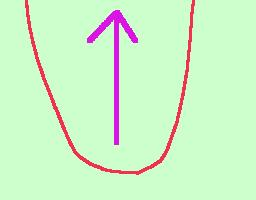
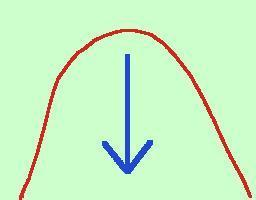
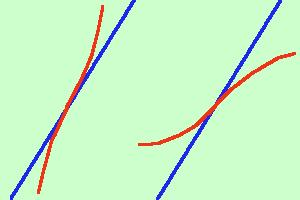

| y = x2 essa ha la concavita' verso l'alto In generale vale la regola: se la derivata seconda e' positiva la concavita' e' verso l'alto. Se la derivata seconda e' negativa la concavita' e' verso il basso Per ricordarmela, siccome ho il vizio di confondermi, penso sempre alla parabola: infatti la derivata seconda di y = x2 e' 2 cioe' e' positiva e la parabola volge la concavita' verso l'alto.  Attento che dire che il flesso e' ascendente non significa necessariamente che la tangente di flesso va verso l'alto infatti guarda la differenza fra queste due rappresentazioni di flessi con la tangente di flesso che va dal basso verso l'alto:
|